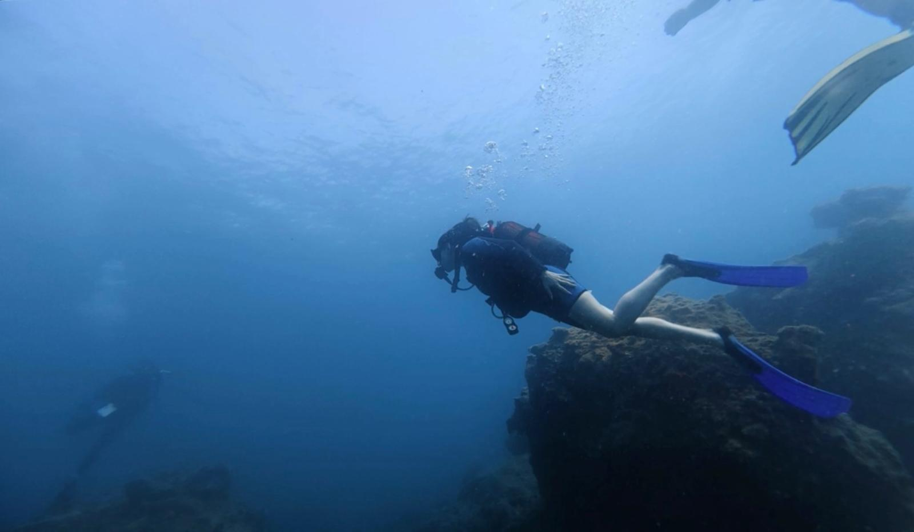
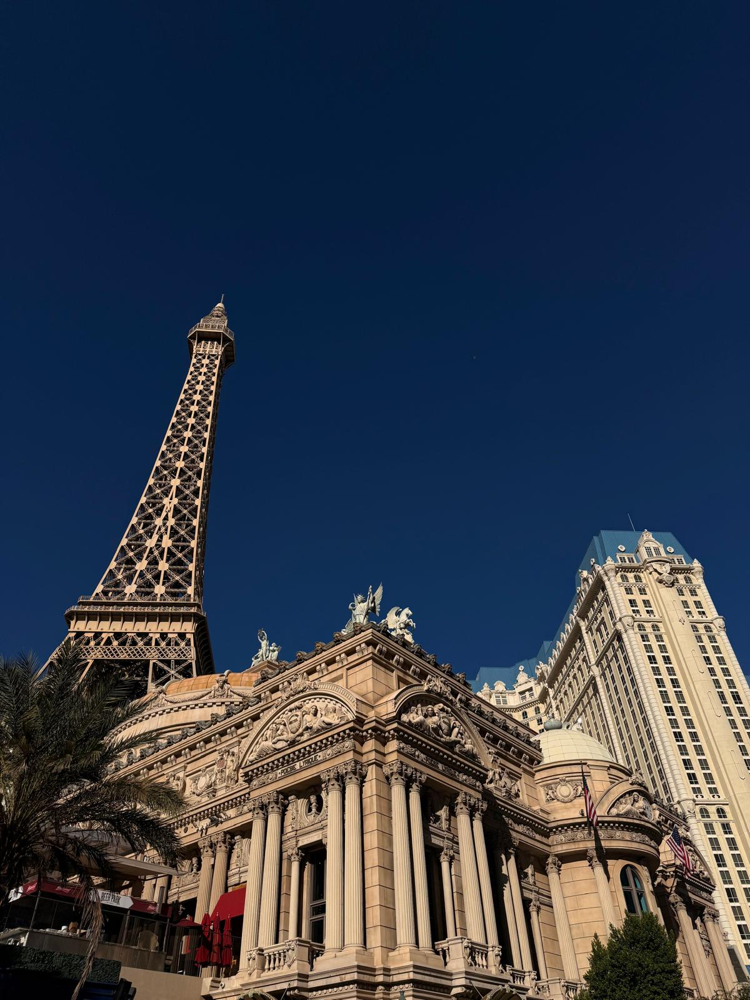
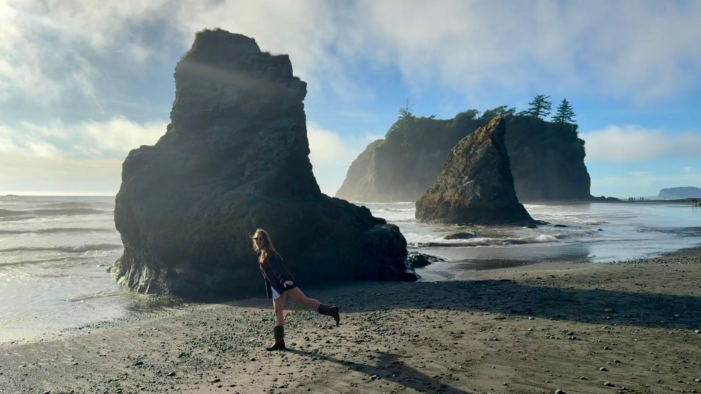

2020
Started university
Began studying Computer Education and Instructional Technology at METU.
I dive, hike, take photos and travel. Scroll down to see the journey so far.




Final-year CEIT (Computer Education and Instructional Technology) student at METU, graduating in January 2027, interested in the intersection of technology, engineering, and business. I aim to build my career in roles connecting customer needs with sales, operations, and project processes. My experience in the U.S. through the Work & Travel program strengthened my communication, adaptability, and ability to work in dynamic environments.
Began studying Computer Education and Instructional Technology at METU.
Monitored site health with Google Search Console, ran site crawls with Screaming Frog and wrote SEO-optimized copy.
Managed Instagram, LinkedIn and Twitter, designed posts and helped coordinate a workshop at a congress.
Lived, worked and traveled in Washington, which strengthened my communication and adaptability.
Organized academic data, prepared structured reports and supported research tasks.
Supported classroom activities and helped prepare lessons and instructional materials.
As Business Analyst & UX/UI Designer, designed user flows and Figma screens, ran user tests, analyzed student data with SQL and clarified requirements with developers.
Finishing my degree at METU.
The quickest way to reach me is email.